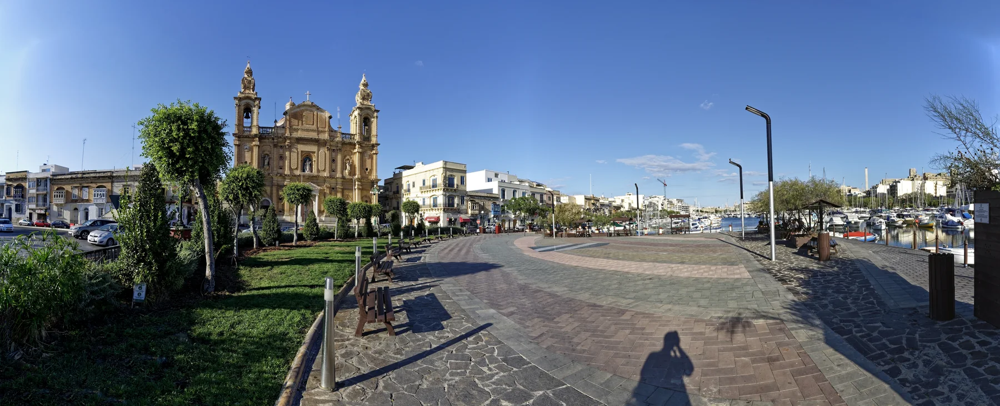

The government recorded a new public square and sections of promenade opening in July 2026. Verify the exact entrance, crossings and current works around a listing.
MSIDA · THREE CONTEXTS
Creek, streets, campus.
Read Msida through the exact address: the parish-waterfront edge, the inland streets behind it, then Tal-Qroqq and the university campus uphill.

START WITH THE EXACT STREET
One locality, different routines.
The Local Council records Msida's shift from fishing settlement to university town. That shared identity does not make a Valley Road home a waterfront address or place every creek listing beside the campus.
Valley Road and the older inland grid need their own grocery, clinic and transport check rather than a harbour assumption.
The University of Malta's main campus is in Msida, but elevation and junctions make a property-specific route more useful than a locality-wide walking claim.
A changing public edge.
The waterfront panorama gives orientation around the parish church, marina and open harbour space. It does not prove a view, quiet interior, easy parking or completed works for any property.
Government project update ↗A campus context uphill.
The University identifies its main campus at Msida MSD 2080 and publishes a separate campus map. This edition keeps campus orientation distinct from the creek and assigns no commute time without a real property origin.
University campus information ↗OFFICIAL AND OPERATOR-VERIFIED EXAMPLES
Everyday anchors, without a ranking.
These examples help place practical life around Msida. They are not claims that a venue is the best, closest or suitable for every property, and current hours remain on the linked source.
Msida Community Clinic
Primary HealthCare lists the clinic at the Local Council in St Augustine Street. Service schedules and appointment rules stay with the official directory.
Official clinic directory ↗Welbee's Campus
The operator lists its supermarket at the University of Malta, Tal-Qroqq, Msida. Distance and route still depend on the property.
Operator store locator ↗Busy Bee
Busy Bee publishes a specific Msida menu. Current branch details, hours and menu remain mutable and should be checked directly.
Published Msida menu ↗Shakinah
The operator identifies its restaurant at 11 Ta' Xbiex Seafront, Msida and documents an Indian menu without supporting any ranking claim here.
Operator information ↗No harbour shortcut.
This page draws no walking route, ferry line or commute time. Walking geometry, bus timetables, current car traffic and taxi-price observations are separate sources and must be checked from the exact origin, destination and observation time.
Open the Msida map only when you need it.
The overview includes the creek, inland streets and Tal-Qroqq campus context. It deliberately draws no council boundary, route or journey time and loads from OpenStreetMap only after your click.
Msida Local Council · Office of the Address Registrar · University of Malta · Government waterfront update · Primary HealthCare · Welbee's · Busy Bee · Shakinah
No ranking, fixed opening hours, property-specific route, accessibility promise, guaranteed view, parking claim or locality-wide journey time is claimed.